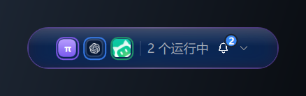
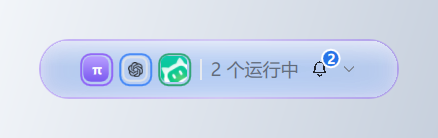
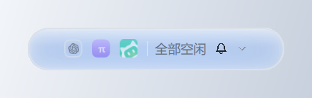
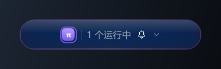
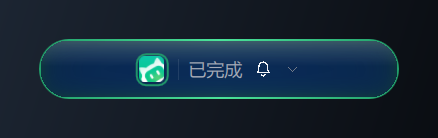
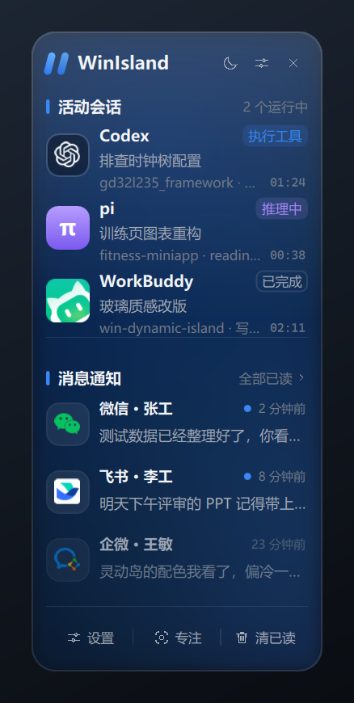
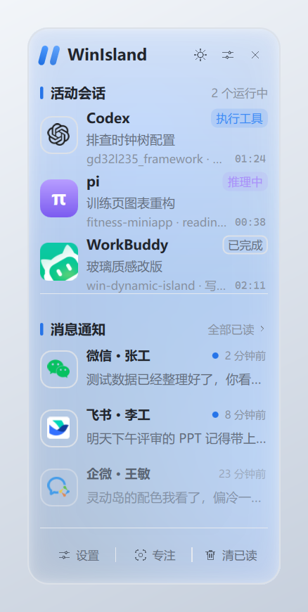
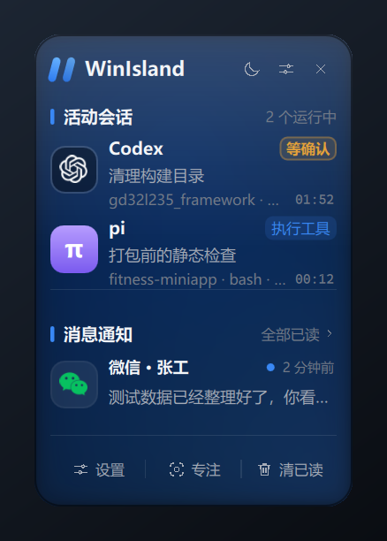
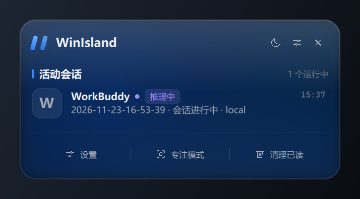

WinIsland · 玻璃质感 v1.0
Windows 灵动岛 · 界面定稿
盯 Codex / pi / WorkBuddy 的会话状态，以及微信、飞书、企业微信的通知。
下面全部是 PySide6 + QML 真实渲染的截图（尺寸即运行尺寸），玻璃是自绘真实背景模糊，不是贴图。
2026-11-24 · 收起 40px 高 / 展开 528px 高，两种状态同为 240px 宽 · 深/浅双主题
收起态 常驻顶部中央，不抢焦点、不进任务栏
左侧有几个 agent 有会话就摆几个 logo（同一个 agent 多个会话只算一个），每个 logo 外面套一圈状态描边；右侧铃铛挂未读数。胶囊宽度固定 240px、和展开态完全一致，所以展开时它不会横向拉伸。胶囊本身是一块玻璃：背后的壁纸和窗口被真实模糊后透过它。

深色 · 三个 agentπ 紫环（推理中）、OpenAI 蓝环（执行工具）、WorkBuddy 绿环（已完成），顺序按状态紧急度排。文字走系统灰度抗锯齿，透明窗上不会出现彩色描边。

浅色 · 三个 agent冷白磨砂，黑字压在上面；同一套布局与状态色，只换 token 与 tint。

全部空闲logo 整体压暗、不挂彩环，外圈回到普通 1px 描边，不制造视觉噪音。
边框跟着状态走 进行中呼吸，完成常亮
胶囊外圈取「最该被看见」的那个状态；每个 logo 外面的那圈细描边是它自己的状态。渐变描边是「外层渐变圆角矩形 + 内缩 1.5px 的玻璃」拼出来的：Qt 的 Rectangle 边框只支持单色，Shape 也没有渐变描边。

推理中 · 紫色渐变1.3s 一上一下缓慢呼吸，不抢注意力但能看出「还在想」。左边是 pi 的图标，外面那圈同色细环表示它自己的状态。

已完成 · 绿色渐变常亮WorkBuddy 跑完了，边框转绿不再闪；文案同步变成「已完成」。
展开态 点击胶囊展开，宽度不变、只向下长高度
因为和胶囊同宽（240px），面板用三行紧凑排版：agent 名 + 状态 chip / 会话名 / 项目 · 动作 + 耗时。下区是消息通知，没有消息时整段自动收起，不留空槽。

深色玻璃66% 深蓝黑着色 + 0.74 模糊，壁纸只剩一层柔和光影；白字对比度稳定在 7:1 以上。

浅色磨砂70% 冷白着色，背景压到只留色相；黑字与浅灰正文都够读。
告警与真实数据 等确认时整块玻璃转琥珀边

等你确认哪一行在等人，整行染琥珀 + 外框转琥珀色——需要批准 · rm -rf build/ 这种就是值得抬头看一眼的时刻。

真实数据这张是跑本机日志渲出来的：WorkBuddy 当前会话、项目名、已运行 10 分钟。没有 IM 通知时消息区自动隐藏。
设计规格 全部来自 app/tokens.py，QML 不写死色值
语义状态色
执行工具#3988F5
推理中#A78BFA
等确认#E5A13A
已完成 / 空闲#8993A1
出错#E45858
微信#07C160
飞书#3370FF
企微#0082EF
尺寸
胶囊高度 / 圆角40px / 20px 全圆
胶囊宽度240px 固定（与面板一致）
面板宽度 / 圆角240px / 20px
会话行 / 消息行60px / 56px
字号阶梯15 · 13 · 12 · 11 · 10 · 9
动效展开 220ms OutCubic
玻璃配方
背景来源抓屏（排除自身）
降采样1/6 再拉回
模糊MultiEffect 0.74 / 0.82
着色 · 深#A80A0D13
着色 · 浅#B4F6F8FB
描边 / 高光1px 白 11% / 顶部 17%
为什么不直接用系统 acrylic：DWM 的模糊层由系统合成，
不受 SetWindowRgn 约束——
胶囊是圆角时，模糊底会是一个方角矩形从圆角外面露出来（已实测复现）。
所以改成自己抓窗口背后的屏幕（用
WDA_EXCLUDEFROMCAPTURE 把自身排除，避免自我反馈），
降采样后在 QML 里做高斯模糊 + 圆角遮罩，圆角和模糊都能精确控制。
- 已知限制：飞书是 CEF 外壳，UIA 树到
BrowserUserView 就断，正文抓不到，目前只能报「有新消息」。企微待现场验证。
- 背景每 2.5 秒刷新一次，静止时几乎没有开销；移动或展开时按尺寸重抓。